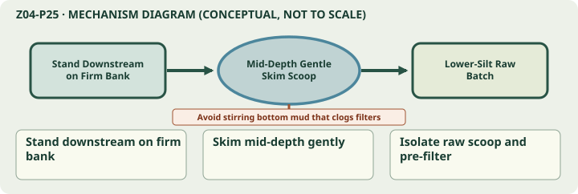

Z04-P25 · Water · Adapted historical material
Collect from shallow streams without disturbing bottom sediment
Draw clearer raw water from shallow or silty streams so downstream filters and disinfectants work reliably.
When it applies · Shallow creeks, muddy banks or slow brooks after upstream watershed and chemical screening passes.
Equipment · Clean dedicated raw-water scoop or cup, pre-filter cloth and raw-water container.

Actions
- Position yourself on stable footing slightly downstream of your collection spot so foot movement does not push mud into the intake.[W24, ED]
- Skim gently near the upper-middle water layer with a clean raw scoop rather than plunging the bottle mouth into bottom silt or surface scum.[W24, W08, ED]
- Pour through a clean pre-filter cloth into the raw holding vessel if visible grit remains, keeping raw scoop and cloth isolated from clean gear.[W08, W06, ED]
Failure recognition · Dipping a filter intake directly into churned streambed silt, plugging the cartridge within minutes and forcing untreated bypass attempts.[W24, W08, ED]
Verify · Raw water collected is free of coarse bottom sand and ready for settling or direct entry to the rated treatment stage.[W08, W24, ED]
Stop or change course · If bank footing is unstable, current is swift or heavy storm turbidity overwhelms collection, step back to stable ground and choose another source.[W24, T07, ED]
Evidence and editorial notes
- T07 · FEMA · Flood Hazard Information Sheet (agency PDF)
- Section: How to stay safe when a flood threatens; take an active role · Conditions: U.S. household flood preparedness and evacuation
Support: Prepare contacts, medication and supplies. Heed evacuation instructions and avoid flooded roads.
Limitations: Six inches of moving water can knock down an adult; shallow-looking crossings hide road washouts. · Conflicting evidence: None; aligns with NWS-FLOOD.
Editorial note: Supports flood turnaround and evacuation decision thresholds. · Specialist reviewer: Emergency management
Primary source · checked 2026-11-24 - W06 · CDC · How to Create an Emergency Water Supply (current web edition)
- Section: How to store emergency water; Safe storage containers · Conditions: Potable water intended for emergency storage
Support: Prefer sealed commercial water or clean food-grade tight-closing containers. Avoid containers that held toxic chemicals.
Limitations: Container shelf durability and rotation depend on plastic/material type and storage heat. · Conflicting evidence: None; reinforces strict raw-vs-clean segregation.
Editorial note: Used to enforce labeling and dedicated raw/potable vessel separation. · Specialist reviewer: Drinking-water safety and public health
Primary source · checked 2026-11-24 - W08 · CDC · How to Make Water Safe in an Emergency (2024-09-19)
- Section: Boil > Steps for boiling water > cloudy water · Conditions: Cloudy water with no identified chemical hazard
Support: Settling or cloth clarification only prepares water for treatment. Do not count it as disinfection.
Limitations: Removes coarse suspended solids only; dissolved toxins and microbes remain. · Conflicting evidence: Contradicts folklore claims that sand/cloth straining yields potable water; CDC governs.
Editorial note: Always depicted upstream of microbial treatment with an explicit barrier line. · Specialist reviewer: Drinking-water safety
Primary source · checked 2026-11-24 - W24 · USGS · Turbidity and Water (current web edition)
- Section: Turbidity and Water · optical definition and causes · Conditions: Cloudy, silt-laden, or storm-runoff streams and lakes
Support: Turbidity measures light scattering. Clay, silt and organic or biological material can contribute to turbidity.
Limitations: The USGS measurement is not evidence of potability, actual device clogging, or shielding magnitude. Follow validated treatment guidance. · Conflicting evidence: None; supports physical mechanism of pre-clarification.
Editorial note: Explains physical failure of filters and UV in turbid storm runoff. · Specialist reviewer: Hydrology and drinking-water treatment
Primary source · checked 2026-11-24
Current assessment · A04-W24 (2026-11-25) · Bounded support confirmed (A04): Scattering and contributors are supported. Turbidity cannot identify specific contaminants or clear potability. Limits: Specialist review PENDING (Hydrology and drinking-water treatment); publication HOLD. All release decisions pending.
Source lineage · B009 collection and USGS turbidity; new manuscript · Classification · Adapted historical material.